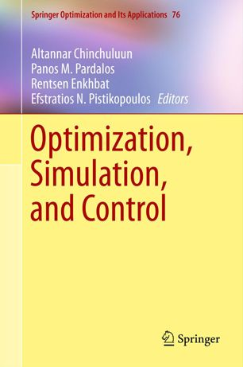

| [74] |
Camilla Fioravanti, Evagoras Makridis, Gabriele Oliva, Maria Vrakopoulou, and Themistoklis Charalambous: "Distributed Estimation and Control for LTI systems under Finite-Time Agreement", IEEE Transactions on Automatic Control (TAC), 2024 (early access).
|
| [73] |
Apostolos I. Rikos, Andreas Grammenos, Evangelia Kalyvianaki, Christoforos N. Hadjicostis, Themistoklis Charalambous, and Karl H. Johansson: "Distributed Optimization for Quadratic Cost Functions with Quantized Communication and Finite-Time Convergence", IEEE Transactions on Control of Network Systems (TCNS), 2024 (accepted).
|
| [72] |
Evagoras Makridis, Camilla Fioravanti, Gabriele Oliva, Maria Vrakopoulou, and Themistoklis Charalambous: "A Fully Distributed LTI Estimation Scheme over Directed Graph Topologies", IEEE Control Systems Letters (L-CSS), vol. 8, pp. 718-723, 2024.
|
| [71] |
Nikolaos Nomikos, Themistoklis Charalambous, Panagiotis Trakadas, and Risto Wichman: "Bandit-Based Learning-Aided Full-Duplex/Half-Duplex Mode Selection in 6G Cooperative Relay Networks", IEEE Open Journal of the Communications Society (OJCOMS), vol. 5, pp. 1415-1429, 2024.
|
| [70] |
Yahia S. Elshakhs, Kyriakos M. Deliparaschos, Themistoklis Charalambous, Gabriele Oliva, and Argyrios Zolotas: "A comprehensive survey on Delaunay Triangulation: Applications, Algorithms, and Implementations over CPUs, GPUs, and FPGAs", IEEE Access, vol. 12, pp. 12562-12585, 2024.
|
| [69] |
Mohammadreza Doostmohammadian, Alireza Aghasi, Maria Vrakopoulou, Hamid R. Rabiee, Usman A. Khan, and Themistoklis Charalambous: "Distributed Delay-Tolerant Strategies for Equality-Constraint Sum-Preserving Resource Allocation", Systems & Control Letters, vol. 182, 105657, December 2023.
|
| [68] |
Tahmoores Farjam, Henk Wymeersch, and Themistoklis Charalambous: "Distributed Channel Access for Control over Known and Unknown Gilbert-Elliott Channel", IEEE Transactions on Automatic Control (TAC), vol. 68 (12), pp. 7405-7419, 2023.
|
| [67] |
Xiaomeng Chen, Wei Jiang, Themistoklis Charalambous, and Ling Shi: "A Privacy-Preserving Finite-Time Push-Sum based Gradient Method for Distributed Optimization over Digraphs", IEEE Control Systems Letters (L-CSS), vol. 7, pp. 3133-3138, 2023.
|
| [66] |
Apostolos I. Rikos, Themistoklis Charalambous, Christoforos N. Hadjicostis, Karl H. Johansson: "Distributed Computation of Exact Average Degree and Network Size in Finite Time under Quantized Communication", European Journal of Control (EJCON), Volume 74, pp. 100848, 2023.
|
| [65] |
Pyry Veijalainen, Themistoklis Charalambous, and Risto Wichman: "Feasibility of Bluetooth Low Energy for Motion Capturing with Inertial Measurement Units", Elsevier Journal of Network and Computer Applications, Volume 213, pp. 103566, 2023.
|
| [64] |
Endrit Dosti, Sergiy A. Vorobyov, and Themistoklis Charalambous: "A New Class of Composite Objective Multistep Estimating Sequence Techniques", Elsevier Signal Processing, Volume 206, pp. 08889, 2023.
|
| [63] |
Gabriele Oliva, Themistoklis Charalambous, Luca Faramondi, Roberto Setola, and Andrea Gasparri: "Best Effort Workload Disparity Minimization in Multi-Agent Systems with Capacity Constraints", IEEE Transactions on Automatic Control (TAC), vol. 68, no. 8, pp. 4998-5005, Aug. 2023.
|
| [62] |
Andreas Grammenos, Themistoklis Charalambous, and Evangelia Kalyviannaki: "CPU Scheduling in Data Centers Using Asynchronous Finite-Time Distributed Coordination Mechanisms", IEEE Transactions on Networks and Systems Engineering (TNSE), vol. 10, no. 4, pp. 1880-1894, 1 July-Aug. 2023.
|
| [61] |
Emmanouil Fountoulakis, Themistoklis Charalambous, Anthony Ephremides, and Nikolaos Pappas: "Scheduling Policies for AoI Minimization with Timely Throughput Constraints", IEEE Transactions on Communications (TCOM), vol. 71, no. 7, pp. 3905-3917, July 2023.
|
| [60] |
Elham Abolfazli, Bart Besselink, and Themistoklis Charalambous: "Minimum Time Headway in Platooning Systems under the MPF Topology for Different Wireless Communication Scenarios", IEEE Transactions on Intelligent Transportation Systems (T-ITS), vol. 24, no. 4, pp. 4377-4390, April 2023.
|
| [59] |
Apostolos I. Rikos, Themistoklis Charalambous, Karl H. Johansson, and Christoforos N. Hadjicostis: "Distributed Event-Triggered Algorithms for Finite-Time Privacy-Preserving Quantized Average Consensus", IEEE Transactions on Control of Network Systems (TCNS), vol. 10, no. 1, pp. 38-50, March 2023.
|
| [58] |
Yiyang Chen, Wei Jiang, and Themistoklis Charalambous: "Machine Learning based Iterative Learning Control for Non-Repetitive Time-Varying Systems", International Journal of Robust and Nonlinear Control, vol. 33(7), pp. 4098-4116, 2023.
|
| [57] |
Tahmoores Farjam, Henk Wymeersch, and Themistoklis Charalambous: "Distributed Channel Access for Control Over Unknown Memoryless Communication Channels", IEEE Transactions on Automatic Control (TAC), vol. 67, no. 12, pp. 6445-6459, Dec. 2022.
|
| [56] |
Mohammadreza Doostmohammadian, Alireza Aghasi, Apostolos I. Rikos, Andreas Grammenos, Evangelia Kalyvianaki, Christoforos N. Hadjicostis, Karl H. Johansson, and Themistoklis Charalambous: "Distributed Anytime-Feasible Resource Allocation subject to Heterogeneous Time-Varying Delays with Application to CPU Scheduling", IEEE Open Journal of Control Systems (OJ-CSYS), DOI: 10.1109/OJCSYS.2022.3210453, 2022.
|
| [55] |
Mohammadreza Doostmohammadian, H. Zarrabi, and Themistoklis Charalambous: "Sensor Fault Detection and Isolation via Networked Estimation: Rank-Deficient Dynamical Systems", International Journal of Control (TCON), DOI: 10.1080/00207179.2022.2117084, 2022.
|
| [54] |
Nikolaos Nomikos, Mohammad Sadegh Talebi, Themistoklis Charalambous, and Risto Wichman: "Bandit-Based Power Control in Full-Duplex Cooperative Relay Networks with Strict-Sense Stationary and Non-Stationary Wireless Communication Channels", IEEE Open Journal of the Communications Society (OJCOMS), vol. 3, pp. 366-378, 2022.
|
| [53] |
Elham Abolfazli, Bart Besselink, and Themistoklis Charalambous: "On time headway selection in platoons under the MPF topology in the presence of communication delays", IEEE Transactions on Intelligent Transportation Systems (T-ITS), vol. 23, no. 7, pp. 8881-8894 July 2022.
|
| [52] |
Emmanouil Fountoulakis, Themistoklis Charalambous, Nikolaos Nomikos, Anthony Ephremides, and Nikolaos Pappas: "Information Freshness and Packet Drop Rate Interplay in a Two-User Multi-Access Channel", Journal of Communications and Networks (JCN), vol. 24, no. 3, pp. 357-364, June 2022.
|
| [51] |
Tahmoores Farjam and Themistoklis Charalambous: "Power Allocation for Remote Estimation Over Known and Unknown Gilbert-Elliott Channels", Frontiers in Control Engineering, 3:861055, April 2022.
|
| [50] |
Evagoras Makridis, Kyriakos M. Deliparaschos, Evangelia Kalyvianaki, Argyrios~Zolotas, and Themistoklis Charalambous: "Robust Dynamic CPU Resource Provisioning in Virtualized Servers", IEEE Transactions on Services Computing (ToSC), vol. 15, no. 2, pp. 956-969, April 2022.
|
| [49] |
Charalambos D. Charalambous, Themistoklis Charalambous, Christos Kourtellaris, and Jan H. van Schuppen: "Complete Characterization of Gorbunov and Pinsker Nonanticipatory Epsilon Entropy of Multivariate Gaussian Sources: Structural Properties", IEEE Transactions on Information Theory (TIT), vol. 68, no. 3, pp. 1440-1464, March 2022.
|
| [48] |
Mohammadreza Doostmohammadian, Usman A. Khan, Mohammad Pirani, and Themistoklis Charalambous: "Consensus-Based Distributed Estimation in the presence of Heterogeneous, Time-Invariant Delays", IEEE Control Systems Letters (L-CSS), vol. 6, pp. 1598-1603, 2022.
|
| [47] |
Nikolaos Nomikos, Spyros Zoupanos, Themistoklis Charalambous, and Ioannis Krikidis: "A Survey on Reinforcement Learning-Aided Caching in Mobile Edge Networks", IEEE Access, vol. 10, pp. 4380-4413, Jan. 2022.
|
| [46] |
Wei Jiang, Kun Liu, and Themistoklis Charalambous: "Multi-agent consensus with heterogeneous time-varying input and communication delays in digraphs", Automatica, vol. 135, 109950, January 2022.
|
| [45] |
Mohammadreza Doostmohammadian, Alireza Aghasi, Themistoklis Charalambous, and Usman A. Khan: "Distributed support vector machines over dynamic balanced directed networks", IEEE Control Systems Letters (L-CSS), vol. 6, pp. 758-763, 2022.
|
| [44] |
Mohammadreza Doostmohammadian, Houman Zarrabi, Hamid R. Rabiee, Usman A. Khan, and Themistoklis Charalambous: "Distributed Detection and Mitigation of Biasing Attacks over Multi-Agent Networks", IEEE Transactions on Network Science and Engineering (TNSE), vol. 8(4), pp. 3465-3477, 2021.
|
| [43] |
Nikolaos Nomikos, Themistoklis Charalambous, Nikolaos Pappas, Demosthenes Vouyioukas, and Risto Wichman: "LoLa4SOR: Leveraging Successive Transmissions for Low-Latency Buffer-Aided Opportunistic Relay Networks", IEEE Open Journal of the Communications Society (OJCOMS) - Special issue on ``Full-Duplex Transceivers for Future Networks: Theory and Techniques'', vol. 2, pp. 1041-1054, 2021.
|
| [42] |
Wei Jiang, Yiyang Chen, and Themistoklis Charalambous: "Consensus of General Linear Multi-Agent Systems with Heterogeneous Input and Communication Delays", IEEE Control Systems Letters (L-CSS), vol. 5, no. 3, pp. 851-856, July 2021.
|
| [41] |
Nikolaos Nomikos, Themistoklis Charalambous, Demosthenes Vouyioukas, and George K. Karagiannidis: "When Buffer-Aided Relaying Meets Full-Duplex and NOMA", IEEE Wireless Communications
vol. 28, no. 1, pp. 68-73, February 2021.
|
| [39] |
Ioannis Tzortzis, Charalambos D. Charalambous, and Themistoklis Charalambous: "Infinite Horizon Average Cost Dynamic Programming Subject to Total Variation Distance Ambiguity", SIAM Journal on Control and Optimization (SICON), Vol. 57, No. 4: pp. 2843-2872, 2019.
|
| [38] |
Demia Della Penda, Risto Wichman, Themistoklis Charalambous, Gabor Fodor, and Mikael Johansson: "A Distributed Mode Selection Scheme for Full-Duplex Device-to-Device Communication", IEEE Transactions on Vehicular Technology (TVT), vol. 68, no. 10, pp. 10267-10271, Oct. 2019.
|
| [37] |
Nikolaos Nomikos, Themistoklis Charalambous, Demosthenes Vouyioukas, George K. Karagiannidis, and Risto Wichman: "Hybrid NOMA/OMA with Buffer-Aided Relay Selection in Cooperative Networks", IEEE Journal of Selected Topics in Signal Processing (J-STSP), vol. 13, no. 3, pp. 524-537, 2019.
|
| [36] |
Themistoklis Charalambous, Su Min Kim, Nikolaos Nomikos, Mats Bengtsson, and Mikael Johansson: "Relay-Pair Selection in Buffer-Aided Successive Opportunistic Relaying using a Multi-Antenna Source", Elsevier Ad Hoc Networks, vol. 84, pp. 29-41, 2019 (invited).
|
| [35] |
Nikolaos Nomikos, Dimitrios Poulimeneas, Themistoklis Charalambous, Ioannis Krikidis, Demosthenes Vouyioukas, and Mikael Johansson: "Delay- and diversity-aware buffer-aided relay selection policies", IEEE Access, vol. 6, pp. 73531-73547, 2018.
|
| [34] |
Photios A. Stavrou, Themistoklis Charalambous, Charalambos D. Charalambous, and Sergey Loyka: "Optimal Estimation via Nonanticipative Rate Distortion Function and Applications to Time-Varying Gauss-Markov Processes", SIAM Journal on Control and Optimization (SICON), vol. 56(5), pp. 3731-3765, October 2018.
|
| [33] |
Nikolaos Nomikos, Themistoklis Charalambous, Demosthenes Vouyioukas, George K. Karagiannidis and Risto Wichman: "Power Adaptation in Buffer-Aided Full-Duplex Relay Networks with Statistical CSI", IEEE Transactions on Vehicular Technology (TVT), vol. 67, no. 8, pp. 7846-7850, August 2018.
|
| [32] |
Nikolaos Nomikos, Themistoklis Charalambous, Demosthenes Vouyioukas, and George K. Karagiannidis: "Low-Complexity Buffer-Aided Link Selection with Outdated CSI and Feedback Errors", IEEE Transactions on Communications (TCOM), vol. 66, no. 8, pp. 3694-3706, August 2018.
|
| [31] |
Markus Fröhle, Themistoklis Charalambous, Ido Nevat, and Henk Wymeersch: "Channel Prediction with Location Uncertainty for Ad-Hoc Networks", IEEE Transactions on Signal and Information Processing over Networks (T-SIPN), vol. 4, no. 2, pp. 349-361, June 2018.
|
| [30] |
Tahmoores Farjam, Themistoklis Charalambous, and Henk Wymeersch: "A Timer-Based Distributed Channel Access Mechanism in Networked Control Systems", IEEE Transactions on Circuits and Systems II: Express Briefs (TCAS-II), vol. 65, no. 5, pp. 652-656, May 2018.
|
| [29] |
Srikar L. Muppirisetty, Themistoklis Charalambous, Johnny Karout, Henk Wymeersch, and Gabor Fodor: "Location-Aided Pilot Contamination Avoidance for Massive MIMO Systems", IEEE Transactions on Wireless Communications (TWC), vol. 17, no. 4, pp. 2662-2674, April 2018.
|
| [28] |
Photios A. Stavrou, Themistoklis Charalambous, and Charalambos D. Charalambous: "Finite-Time Nonanticipative Rate Distortion Function for Time-Varying Scalar-Valued Gauss-Markov Sources", IEEE Control Systems Letters (L-CSS), vol. 2, no. 1, pp. 175-180, January 2018.
|
| [27] |
Mario Zanon, Themistoklis Charalambous, Henk Wymeersch, and Paolo Falcone: "Optimal Scheduling of Downlink Communication for a Multi-Agent System with a Central Observation Post", IEEE Control Systems Letters (L-CSS), vol. 2, no. 1, pp. 37-42, January 2018.
|
| [24] |
Zhenhua Zou, Anders Gidmark, Themistoklis Charalambous and Mikael Johansson: "Optimal Radio Frequency Energy Harvesting with Limited Energy Arrival Knowledge", IEEE Journal on Selected Areas in Communications (JSAC), vol. 34, no. 12, pp. 3528-3539, Dec. 2016.
|
| [23] |
Nikolaos Nomikos, Themistoklis Charalambous, Ioannis Krikidis, Dimitrios N. Skoutas, Demosthenes Vouyioukas, Mikael Johansson and Charalabos Skianis: "A Survey on Buffer-Aided Relay Selection", IEEE Communications Surveys and Tutorials, vol. 18, no. 2, pp. 1073-1097, Secondquarter 2016.
|
| [22] |
Themistoklis Charalambous, Michael G. Rabbat, Mikael Johansson and Christoforos N. Hadjicostis: "Distributed Finite-Time Computation of Digraph Parameters: Left-Eigenvector, Out-Degree and Spectrum", IEEE Transactions on Control of Network Systems, vol. 3, no. 2, pp. 137-148, June 2016.
|
| [21] |
Michalis Kolossiatis, Themistoklis Charalambous and Etienne Burdet: "How Variability and Effort Determine Coordination at Large Forces", PLoS ONE 11(3): e0149512, March 2016.
|
| [20] |
Themistoklis Charalambous, Ye Yuan, Tao Yang, Wei Pan, Christoforos N. Hadjicostis and Mikael Johansson: "Distributed Finite-Time Average Consensus in Digraphs in the Presence of Time-Delays", IEEE Transactions on Control of Network Systems, vol. 2, no. 4, pp. 370-381, December 2015.
|
| [19] |
Ioannis Tzortzis, Charalambos D. Charalambous and Themistoklis Charalambous: "Dynamic Programming Subject to Total Variation Distance Ambiguity", SIAM Journal on Control and Optimization, vol. 53, no. 4, pp. 2040-2075, July 2015.
|
| [18] |
Nikolaos Nomikos, Themistoklis Charalambous, Ioannis Krikidis, Dimitrios N. Skoutas, Demosthenes Vouyioukas and Mikael Johansson: "A Buffer-aided Successive Opportunistic Relay Selection Scheme with Power Adaptation and Inter-Relay Interference Cancellation for Cooperative Diversity Systems", IEEE Transactions on Communications, vol.63, no.5, pp.1623-1634, May 2015.
|
| [17] |
Themistoklis Charalambous, Nikolaos Nomikos, Ioannis Krikidis, Demosthenis Vouyioukas and Mikael Johansson: "Modeling Buffer-Aided Relay Selection in Networks With Direct Transmission Capability", IEEE Communication Letters, Volume 19 (4), pp. 649-652, April 2015.
|
| [16] |
Themistoklis Charalambous, Wolfram Wiesemann, Evelina Klerides, Angelos Vassiliou, Stavros Hadjitheophanous and Kyriakos M. Deliparaschos: "On the Minimum Latency Transmission Scheduling in Wireless Networks with Power Control under SINR Constraints", Wiley Transactions on Emerging Telecommunications Technologies, Volume 26 (3), pp. 367-379, March 2015.
|
| [15] |
Hamid Reza Feyzmahdavian, Themistoklis Charalambous and Mikael Johansson: "Asymptotic Stability and Decay Rates of Homogeneous Positive Systems With Bounded and Unbounded Delays", SIAM Journal on Control and Optimization, Volume 52 (4), pp. 2037-2054, September 2014.
|
| [14] |
Themistoklis Charalambous, Charalambos D. Charalambous and Farzad Rezaei: "Optimal Merging Algorithms for Lossless Codes with Generalized Criteria", IEEE Transactions on Information Theory, Volume 60 (9), pp. 5486-5499, September 2014.
|
| [13] |
Charalambos D. Charalambous, Ioannis Tzortzis, Sergey Loyka and Themistoklis Charalambous: "Extremum Problems with Total Variation Distance and their Applications", IEEE Transactions on Automatic Control, Volume 59 (9), pp. 2353-2368, September 2014.
|
| [12] |
Hamid Reza Feyzmahdavian, Themistoklis Charalambous and Mikael Johansson: "Stability and Performance of Continuous-Time Power Control in Wireless Networks", IEEE Transactions on Automatic Control, Volume 59 (8), pp. 2012-2023, August 2014.
|
| [11] |
Nikolaos Nomikos, Demosthenis Vouyioukas, Themistoklis Charalambous, Ioannis Krikidis, Dimitrios Skoutas and Mikael Johansson: "Joint relay-pair selection for buffer-aided successive opportunistic relaying", Wiley Transactions on Emerging Telecommunications Technologies, Volume 25 (8), pp. 823-834, August 2014.
|
| [10] |
Evangelia Kalyvianaki, Themistoklis Charalambous and Steven Hand: "Adaptive Resource Provisioning for Virtualized Servers Using Kalman Filters", ACM Transactions on Autonomous and Adaptive Systems, Volume 9 (2), pp. 10:1-10:35, July 2014.
|
| [9] |
Apostolos Rikos, Themistoklis Charalambous and Christoforos N. Hadjicostis: "Distributed Weight Balancing over Digraphs", IEEE Transactions on Control of Network Systems, Volume 1 (2), pp.1-12, June 2014.
|
| [8] |
Hamid Reza Feyzmahdavian, Themistoklis Charalambous and Mikael Johansson: "Exponential Stability of Homogeneous Positive Systems of Degree One With Time-Varying Delays", IEEE Transactions on Automatic Control, Volume 59 (6), pp.1594-1599, June 2014.
|
| [7] |
Christoforos N. Hadjicostis and Themistoklis Charalambous: "Average Consensus in the Presence of Delays in Directed Graph Topologies", IEEE Transactions on Automatic Control, Volume 59 (3), pp.763-768, March 2014.
|
| [6] |
Hamid Reza Feyzmahdavian, Mikael Johansson and Themistoklis Charalambous: "Contractive Interference Functions and Rates of Convergence of Distributed Power Control Laws", IEEE Transactions on Wireless Communications, Volume 11 (12), pp.4494-4502, December 2012.
|
| [5] |
Nathanael Jarrasse, Themistoklis Charalambous and Etienne Burdet: "A Framework to Describe, Analyze and Generate Interactive Motor Behaviors", PLoS ONE 7(11): e49945, November 2012.
|
| [4] |
Ioannis Krikidis, Themistoklis Charalambous and John S. Thompson: "Buffer-Aided Relay Selection for Cooperative Diversity Systems without Delay Constraints", IEEE Transactions on Wireless Communications, Volume 11 (5), pp.1957-1967, May 2012.
|
| [3] |
Ioannis Krikidis, Themistoklis Charalambous and John S. Thompson: "Stability Analysis and Power Optimization for Energy Harvesting Cooperative Networks", IEEE Signal Processing Letters, Volume 19 (1), pp. 20-23, January 2012.
|
| [2] |
Annalisa Zappavinga, Themistoklis Charalambous and Florian Knorn: "Unconditional stability of the Foschini Miljanic Algorithm", Automatica, Volume 48 (1), pp. 219-224, January 2012.
|
| [128] |
Themistoklis Charalambous, Zheng Chen, and Christoforos N. Hadjicostis: "Distributed Average Consensus in Wireless Multi-Agent Systems with Over-the-Air Aggregation", in the IEEE 25th International Workshop on Signal Processing Advances in Wireless Communications (SPAWC), 2024.
|
| [127] |
Evagoras Stylianou, Charalambos D. Charalambous, and Themistoklis Charalambous: "Implicit and Explicit Formulas of the Joint RDF for a Tuple of Multivariate Gaussian Sources with Individual Square-Error Distortions", in the IEEE International Symposium on Information Theory (ISIT), 2024.
|
| [126] |
Evagoras Makridis, Gabriele Oliva, Kasagatta Ramesh Narahari, Mohammadreza Doostmohammadian, Usman A. Khan, and Themistoklis Charalambous: "Distributed Optimization with Gradient Tracking over Heterogeneous Delay-Prone Directed Networks", in the European Control Conference (ECC), 2024.
|
| [125] |
EEvagoras Makridis and Themistoklis Charalambous: "A Linear Push-Pull Average Consensus Algorithm for Delay-Prone Networks", in the European Control Conference (ECC), 2024.
|
| [124] |
Evagoras Makridis, Themistoklis Charalambous, and Christoforos N. Hadjicostis: "Harnessing HARQ Retransmissions for Fast Average Consensus over Unreliable Communication Channels", in the IEEE Conference on Decision and Control (CDC), 2023.
|
| [123] |
Apostolos I. Rikos, Wei Jiang, Themistoklis Charalambous, and Karl H. Johansson: "Asynchronous Distributed Optimization via ADMM with Efficient Communication", in the IEEE Conference on Decision and Control (CDC), 2023.
|
| [122] |
Apostolos I. Rikos, Wei Jiang, Themistoklis Charalambous, and Karl H. Johansson: "Distributed Optimization via Gradient Descent with Event-Triggered Zooming over Quantized Communication", in the IEEE Conference on Decision and Control (CDC), 2023.
|
| [121] |
Xiaomeng Chen, Wei Jiang, Themistoklis Charalambous, and Ling Shi: "A Privacy-Preserving Finite-Time Push-Sum based Gradient Method for Distributed Optimization over Digraphs", in the IEEE Conference on Decision and Control (CDC), 2023.
(not in proceedings, since it appears as a journal paper in IEEE L-CSS)
|
| [120] |
Loizos Hadjiloizou, Evagoras Makridis, Kyriakos Deliparaschos, and Themistoklis Charalambous: "Maximum Correntropy Criterion Kalman Filter for Indoor Quadrotor Navigation under Intermittent Measurements", in the Mediterranean Control Conference (MED), 2023.
|
| [119] |
Apostolos I. Rikos, Themistoklis Charalambous, Christoforos N. Hadjicostis, Karl H. Johansson: "Distributed Computation of Exact Average Degree and Network Size in Finite Number of Steps under Quantized Communication", in the European Control Conference (ECC), 2023.
|
| [118] |
Themistoklis Charalambous and Gabriele Oliva: "Distributed Low-Effort Load Balancing in the Presence of Time-Delays", in the IFAC World Congress, 2023.
|
| [117] |
Wei Jiang and Themistoklis Charalambous: "Finite-Time Consensus-based Dual Algorithm for Distributed Optimization over Digraphs", in the IFAC World Congress, 2023.
|
| [116] |
Apostolos I. Rikos, Wei Jiang, Themistoklis Charalambous, and Karl H. Johansson: "Finite-Time Distributed Optimization with Quantized Gradient Descent", in the IFAC World Congress, 2023.
|
| [115] |
Themistoklis Charalambous, Muwahida Liaquat, Balázs Kulcsár, and Henk Wymeersch: "Back-Pressure Traffic Signal Control in the Presence of Noisy Queue Information", in the IFAC World Congress, 2023.
|
| [114] |
Evagoras Makridis, Themistoklis Charalambous, and Christoforos N. Hadjicostis: "Utilizing Feedback Channel Mechanisms for Reaching Average Consensus over Directed Network Topologies", in the IEEE American Control Conference (ACC), 2023.
|
| [113] |
Emmanouil Fountoulakis, Themistoklis Charalambous, Anthony Ephremides, and Nikolaos Pappas: "AoI minimization with Timely-Throughput Constraints over Time-Correlated Wireless Channels", in the IEEE International Conference on Communications (ICC), 2023.
|
| [112] |
Nicolas Manitaras, Christoforos Hadjicostis, and Themistoklis Charalambous: "Synchronized Stop and Re-start Distributed Average Consensus for Control and Coordination Applications", in the Allerton Conference on Communication, Control, and Computing (Allerton), 2022.
|
| [111] |
Loizos Hadjiloizou, Kyriakos M. Deliparaschos, Evagoras Makridis, and Themistoklis Charalambous: "Onboard Real-Time Multi-Sensor Pose Estimation for Indoor Quadrotor Navigation with Intermittent Communication", in the IEEE Globecom Workshops (GC Wkshps): Workshop on Real-Time Data Processing and Optimization in Industrial and IoT Applications, 2022.
|
| [110] |
Nikolaos Nomikos, Themistoklis Charalambous, and Risto Wichman: "MABAMS: Multi-Armed Bandit-Aided Mode Selection in Cooperative Buffer-Aided Relay Networks", in the IEEE Globecom Workshops (GC Wkshps): Workshop on Emerging Topics in 6G Communications, 2022.
|
| [109] |
Endrit Dosti, Sergiy Vorobyov, and Themistoklis Charalambous: "A new accelerated gradient-based estimating sequence technique for solving large-scale optimization problems with composite structure", in the IEEE Conference on Decision and Control (CDC), 2022.
|
| [108] |
Charalambos D. Charalambous and Themistoklis Charalambous: "State-Dependent Generalizations of Nonanticipatory Epsilon Entropy of Partially Observable Processes", in the IEEE Conference on Decision and Control (CDC), 2022.
|
| [107] |
Giacomo De Benedittis, Henk Wymeersch, and Themistoklis Charalambous: "Intersection Crossing of Autonomous Vehicles for Communication Links with Packet Losses", in the IEEE Conference on Decision and Control (CDC), 2022.
|
| [106] |
Mohammadreza Doostmohammadian, Wei Jiang, and Themistoklis Charalambous: "DTAC-ADMM: Delay-Tolerant Augmented Consensus ADMM-based Algorithm for Distributed Resource Allocation", in the IEEE Conference on Decision and Control (CDC), 2022.
|
| [105] |
Wei Jiang, Mohammadreza Doostmohammadian, and Themistoklis Charalambous: "Distributed Resource Allocation via ADMM over Digraphs", in the IEEE Conference on Decision and Control (CDC), 2022.
|
| [104] |
Wei Jiang and Themistoklis Charalambous: "A Fast Finite-Time Consensus based Gradient Method for Distributed Optimization over Digraphs", in the IEEE Conference on Decision and Control (CDC), 2022.
|
| [103] |
Mohammadreza Doostmohammadian, Alireza Aghasi, Apostolos I. Rikos, Andreas Grammenos, Evangelia Kalyvianaki, Christoforos N. Hadjicostis, Karl H. Johansson, and Themistoklis Charalambous: "Distributed CPU Scheduling Subject to Nonlinear Constraints", in the IEEE Conference on Control Technology and Applications (CCTA), 2022.
|
| [102] |
Mohammadreza Doostmohammadian, Alireza Aghasi, Maria Vrakopoulou, and Themistoklis Charalambous: "1st-Order Dynamics on Nonlinear Agents for Resource Allocation over Uniformly-Connected Networks", in the IEEE Conference on Control Technology and Applications (CCTA), 2022.
|
| [101] |
Endrit Dosti, Sergiy A. Vorobyov, and Themistoklis Charalambous: "A new accelerated gradient method: Embedding the heavy-ball into Nesterov's acceleration framework", in the IEEE International Symposium on Information Theory (ISIT), 2022.
|
| [100] |
Mohammadreza Doostmohammadian and Themistoklis Charalambous: "Linear TDOA-based Measurements for Distributed Estimation and Localized Tracking", in the IEEE 95th Vehicular Technology Conference (VTC2022-Spring), 2022.
|
| [99] |
Mohammadreza Doostmohammadian, Maria Vrakopoulou, Alireza Aghasi, and Themistoklis Charalambous: "Distributed Finite-Sum Constrained Optimization subject to Nonlinearity on the Node Dynamics", in the IEEE 95th Vehicular Technology Conference (VTC2022-Spring), 2022.
|
| [98] |
Wei Jiang and Themistoklis Charalambous: "Finite-Time and Adaptive Observer based Fully Distributed Synchronization of Heterogeneous Linear Systems with Delays", in the European Control Conference (ECC), 2022.
|
| [97] |
Elham Abolfazli, Wei Jiang, and Themistoklis Charalambous: "Towards Establishing String Stability Conditions for Heterogeneous Vehicle Platoons Under the MPF Topology", in the European Control Conference (ECC), 2022.
|
| [96] |
Mohammadreza Doostmohammadian and Themistoklis Charalambous: "Distributed Anomaly Detection and Estimation over Sensor Networks: Observational-Equivalence and Q-Redundant Observer Design", in the European Control Conference (ECC), 2022.
|
| [95] |
Mohammadreza Doostmohammadian, Alireza Aghasi, Mohammad Pirani, Ehsan Nekouei, Usman A. Khan, and Themistoklis Charalambous: "Fast-Convergent Anytime-Feasible Dynamics for Distributed Allocation of Resources Over Switching Sparse Networks with Quantized Communication Links", in the European Control Conference (ECC), 2022.
|
| [94] |
Mohammadreza Doostmohammadian, Alireza Aghasi, Themistoklis Charalambous, and Usman A. Khan: "Distributed support-vector-machine over dynamic balanced directed networks", in the IEEE Conference on Decision and Control (CDC), 2021.
|
| [93] |
Wei Jiang, Andreas Grammenos, Evangelia Kalyvianaki, and Themistoklis Charalambous: "An Asynchronous Approximate Distributed Alternating Direction Method of Multipliers in Digraphs", in the IEEE Conference on Decision and Control (CDC), 2021.
|
| [92] |
Apostolos I. Rikos, Andreas Grammenos, Evangelia Kalyvianaki, Christoforos N. Hadjicostis, Themistoklis Charalambous, and Karl H. Johansson: "Optimal CPU Scheduling in Data Centers via a Finite-Time Distributed Quantized Coordination Mechanism", in the IEEE Conference on Decision and Control (CDC), 2021.
|
| [91] |
Tahmoores Farjam and Themistoklis Charalambous: "Event-Triggered Control in Shared Networks: How the Computational Power of Sensors Affects Transmission Priorities", in the IEEE Conference on Decision and Control (CDC), 2021.
|
| [90] |
Evagoras Stylianou, Charalambos D. Charalambous, and Themistoklis Charalambous: "Joint Rate Distortion Function of a Tuple of Correlated Multivariate Gaussian Sources with Individual Fidelity Criteria", in the IEEE International Symposium on Information Theory (ISIT), 2021.
|
| [89] |
Mohammadreza Doostmohammadian, Themistoklis Charalambous, Miadreza Shafie-Khah, Hamid R. Rabiee and Usman A. Khan: "Analysis of Contractions in System Graphs: Application to State Estimation", in the IEEE International Conference on Autonomous Systems (ICAS), 2021.
|
| [88] |
Mohammadreza Doostmohammadian, Themistoklis Charalambous, Miadreza Shafie-Khah, Nader Meskin and Usman Khan: "Simultaneous Distributed Estimation and Attack Detection/Isolation in Social Networks: Structural Observability, Kronecker-Product Network, and Chi-Square Detector", in the IEEE International Conference on Autonomous Systems (ICAS), 2021.
|
| [87] |
Shengquan Wang, Tahmoores Farjam, and Themistoklis Charalambous: "A Priority-Based Distributed Channel Access Mechanism for Control over CAN-like Networks", in the European Control Conference (ECC), 2021.
|
| [86] |
Wei Jiang, Elham Abolfazli, and Themistoklis Charalambous: "Observer-based Control for Vehicle Platooning with a Leader of Varying Velocity", in the European Control Conference (ECC), 2021.
|
| [85] |
Wei Jiang and Themistoklis Charalambous: "Distributed Alternating Direction Method of Multipliers using Finite-Time Exact Ratio Consensus in Digraphs", in the European Control Conference (ECC), 2021.
|
| [84] |
Lukas Wachter, Orcun Karaca, Georgios Darivianakis, and Themistoklis Charalambous: "A convex relaxation approach for the optimized pulse pattern problem", in the European Control Conference (ECC), 2021.
|
| [83] |
Nikolaos Nomikos, Themistoklis Charalambous, and Risto Wichman: "Bandit-Based Power Control in Full-Duplex Cooperative Relay Networks", in the IEEE International Conference on Communications (ICC), 2021.
|
| [82] |
Emmanouil Fountoulakis, Themistoklis Charalambous, Nikolaos Nomikos, Anthony Ephremides, and Nikolaos Pappas: "Information Freshness and Packet Drop Rate Interplay in a Two-User Multi-Access Channel", in the IEEE Information Theory Workshop (ITW), 2020.
|
| [81] |
Wei Jiang, Yiyang Chen, and Themistoklis Charalambous: "Consensus of General Linear Multi-Agent Systems with Heterogeneous Input and Communication Delays", in the IEEE Conference on Decision and Control (CDC), 2020.
|
| [80] |
Apostolos I. Rikos, Themistoklis Charalambous, Karl H. Johansson, and Christoforos N. Hadjicostis: "Privacy-Preserving Event-Triggered Quantized Average Consensus", in the IEEE Conference on Decision and Control (CDC), 2020.
|
| [79] |
Elham Abolfazli, Bart Besselink, and Themistoklis Charalambous: "Reducing time headway in platoons under the MPF topology when using sensors and wireless communications", in the IEEE Conference on Decision and Control (CDC), 2020.
|
| [78] |
Muhammad Royyan, Mikko Vehkapera, Themistoklis Charalambous, and Risto Wichman: "Throughput-Maximum Energy-Aware Rate Adaptation in W-NCSs over Quasi-Static Fading Channels", in the IEEE Conference on Decision and Control (CDC), 2020.
|
| [77] |
Nikolaos Nomikos, Mohammad Sadegh Talebi, Risto Wichman, and Themistoklis Charalambous: "Bandit-Based Relay Selection in Cooperative Networks over Unknown Stationary Channels", in the IEEE International Workshop on Machine Learning for Signal Processing (MLSP), 2020.
|
| [76] |
Elham Abolfazli, Bart Besselink, and Themistoklis Charalambous: "Reducing time headway in platoons under the MPF topology in the presence of communication delays", in the 21st IFAC World Congress, 2020.
|
| [75] |
Charalambos D. Charalambous, Themistoklis Charalambous, Christos Kourtellaris, and Jan H. van Schuppen: "Structural Properties of Nonanticipatory Epsilon Entropy of Multivariate Gaussian Sources", in the IEEE International Symposium on Information Theory (ISIT), 2020.
|
| [74] |
Evagoras Makridis and Themistoklis Charalambous: "Towards Robust Onboard Control for Quadrotors via Ultra-Wideband-based Localization", in the IEEE International conference on Wireless Communications and Mobile Computing (IWCMC), 2020.
|
| [73] |
Endrit Dosti, Themistoklis Charalambous, and Risto Wichman: "Power Allocation for ARQ Two-Hop Cooperative Networks for Ultra-Reliable Communication", in the IEEE International Conference on Communications (ICC), 2020.
|
| [72] |
Tahmoores Farjam, Fatemeh Fardno, and Themistoklis Charalambous: "Power Allocation of Sensor Transmission for Remote Estimation Over an Unknown Gilbert-Elliott Channel", in the European Control Conference (ECC), 2020.
|
| [71] |
Omar Boufous, Claudio Roncoli, and Themistoklis Charalambous: "Centralized and Distributed Multi-Region Traffic Flow Control", in the European Control Conference (ECC), 2020.
|
| [70] |
Charalambos D. Charalambous, Christos Kourtellaris, Themistoklis Charalambous, and Jan H. van Schuppen: "Generalizations of Nonanticipative Rate Distortion Function to Multivariate Nonstationary Gaussian Autoregressive Processes", in the IEEE Conference on Decision and Control (CDC), 2019.
|
| [69] |
Themistoklis Charalambous, Nikolas E. Manitara, and Christoforos N. Hadjicostis: "Privacy-Preserving Average Consensus over Digraphs in the Presence of Time-Delays", in the Allerton Conference on Communication, Control, and Computing (Allerton), 2019.
|
| [68] |
Neha Chohan, Mohammad Ali Nazari, Henk Wymeersch, and Themistoklis Charalambous: "Robust trajectory planning of autonomous vehicle at intersections with communication impairments", in the Allerton Conference on Communication, Control, and Computing (Allerton), 2019.
|
| [67] |
Muhammad Royyan, Mikko Vehkapera, Themistoklis Charalambous, and Risto Wichman: "Adaptive Coded Modulation for Stabilization of Wireless Networked Control Systems over Binary Erasure Channels", in the Allerton Conference on Communication, Control, and Computing (Allerton), 2019.
|
| [66] |
Nikolaos Nomikos, Themistoklis Charalambous, Nikolaos Pappas, Demosthenes Vouyioukas, and Risto Wichman: "LoLA4SOR: A Low-Latency Algorithm for Successive Opportunistic Relaying", in the IEEE International Conference on Computer Communications Workshops - Ultra-Low Latency in Wireless Networks (INFOCOM WKSHPS: ULLWN), 2019.
|
| [65] |
Giannis Moutsinas, Themistoklis Charalambous, and Weisi Guo: "On the Stability of the Foschini-Miljanic Algorithm with Uncertainty over Channel Gains", in the European Control Conference (ECC), June 2019.
|
| [64] |
Tahmoores Farjam, Themistoklis Charalambous, and Henk Wymeersch: "Timer-Based Distributed Channel Access in Networked Control Systems over Known and Unknown Gilbert-Elliot Channels", in the European Control Conference (ECC), June 2019.
|
| [63] |
Tahmoores Farjam, Themistoklis Charalambous, and Henk Wymeersch: "Timer-Based Distributed Channel Access for Control Over Unknown Unreliable Time-Varying Communication Channels", in the European Control Conference (ECC), June 2019.
|
| [62] |
Photios A. Stavrou, Themistoklis Charalambous, Charalambos D. Charalambous, and Mikael Skoglund: "Asymptotic Reverse-Waterfilling Solution of Nonanticipative Rate Distortion Function for Vector-Valued Gauss-Markov Sources", in the IEEE Conference on Decision and Control (CDC), December 2018.
|
| [61] |
Themistoklis Charalambous and Christoforos N. Hadjicostis: "Laplacian-based matrix design for finite-time average consensus in digraphs", in the IEEE Conference on Decision and Control (CDC), December 2018.
|
| [60] |
Ilias Papastratis, Themistoklis Charalambous and Nikolaos Pappas: "Indoor Navigation of Quadrotors via Ultra-Wideband Wireless Technology", in the IEEE Conference on Advances in Wireless and Optical Communications (RTUWO), November 2018.
|
| [59] |
Mohammad A. Nazari, Ayca Ozcelikkale, Mario Zanon, Themistoklis Charalambous, Jonas Sjöberg, and Henk Wymeersch: "Impact of Communication Frequency on Remote Control of Automated Vehicles", in the IEEE International Symposium on Personal, Indoor, and Mobile Radio Communications (PIMRC) - Workshop WS-03 "International Workshop on V2X Communications and Channel Modeling", September 2018.
|
| [58] |
Nikolaos Nomikos, Nikolaos Pappas, Themistoklis Charalambous, and Yvonne-Anne Pignolet: "Deadline-constrained Bursty Traffic in Random Access Wireless Networks", in the IEEE International Workshop on Signal Processing Advances in Wireless Communications (SPAWC), June 2018.
|
| [57] |
Charalambos D. Charalambous, Christos K. Kourtellaris, and Themistoklis Charalambous: "A General Coding Scheme for Signalling Gaussian Processes over Gaussian Decision Models", in the IEEE International Workshop on Signal Processing Advances in Wireless Communications (SPAWC), June 2018.
|
| [56] |
Themistoklis Charalambous and Christoforos N. Hadjicostis: "When to stop iterating in digraphs of unknown size? An application to finite-time average consensus", in the European Control Conference (ECC), June 2018.
|
| [55] |
Alfréd Csikós, Themistoklis Charalambous, and Balázs Kulcsár: "Towards a robust traffic admission control in homogeneous urban vehicular networks under QoS constraints", in the European Control Conference (ECC), June 2018.
|
| [54] |
Tahmoores Farjam, Themistoklis Charalambous, and Henk Wymeersch: "A Timer-Based Distributed Channel Access Mechanism in Networked Control Systems", in the IEEE International Symposium on Circuits and Systems (ISCAS), May 2018 (invited).
|
| [53] |
Mohammad Ali Nazari, Themistoklis Charalambous, Jonas Sjöberg, and Henk Wymeersch: "Remote Control of Automated Vehicles over Unreliable Channels", in the IEEE Wireless Communications and Networking Conference (WCNC), April 2018.
|
| [52] |
Nikolaos Nomikos, Themistoklis Charalambous, Demosthenes Vouyioukas, George K. Karagiannidis, and Risto Wichman: "Relay selection for buffer-aided non-orthogonal multiple access networks", in the IEEE GLOBECOM Workshop on "Non-Orthogonal Multiple Access Techniques for 5G", December 2017.
|
| [51] |
Demia Della Penda, Nikolaos Nomikos, Themistoklis Charalambous, and Mikael Johansson: "Minimum Power Scheduling under Rician Fading in Full-Duplex Relay-Assisted D2D Communications", in the IEEE GLOBECOM Workshop on "Full-Duplex Relaying and Applications", December 2017.
|
| [50] |
Themistoklis Charalambous, Ayca Ozcelikkale, Mario Zanon, Paolo Falcone, and Henk Wymeersch: "On the Resource Allocation Problem in Wireless Networked Control Systems", in the IEEE Conference on Decision and Control (CDC), December 2017.
|
| [49] |
Christakis Kallis, Kyriakos M. Deliparaschos, George P. Moustris, Avraam Georgiou, and Themistoklis Charalambous: "Incremental 2D Delaunay Triangulation Core Implementation on FPGA for Surface Reconstruction via High-Level Synthesis", in the IEEE International Conference on Emerging Technologies And Factory Automation (ETFA), September 2017.
|
| [48] |
Evagoras Makridis, Kyriakos M. Deliparaschos, Evangelia Kalyvianaki, and Themistoklis Charalambous: "Dynamic CPU Resource Provisioning in Virtualized Servers using Maximum Correntropy Criterion Kalman Filters", in the IEEE International Conference on Emerging Technologies And Factory Automation (ETFA), September 2017.
|
| [47] |
Themistoklis Charalambous, Su Min Kim, Nikolaos Nomikos, Mats Bengtsson, and Mikael Johansson: "Relay Pair Selection Using Phase-Alignment in Buffer-Aided Successive Opportunistic Relaying", in the First International Balkan Conference on Communications and Networking (BalkanCom), June 2017.
|
| [46] |
Alfréd Csikós, Hamed Farhadi, Balázs Kulcsár, Themistoklis Charalambous and Henk Wymeersch: "Traffic flow optimization with QoS constrained network admission control", in the IFAC World Congress, July 2017.
|
| [45] |
Nikolaos Nomikos, Themistoklis Charalambous, Demosthenes Vougioukas and George K. Karagiannidis: "LoCo-Link: A Low-Complexity Link Selection Algorithm for Delay Mitigation in Asymmetric Two-Hop Networks", in the IEEE Conference on Communications (ICC), May 2017.
|
| [44] |
Ioannis Tzortzis, Charalambos D. Charalambous, and Themistoklis Charalambous, Christos K. Kourtellaris and Christoforos N. Hadjicostis: "Robust Linear Quadratic Regulator for Uncertain Systems", in the IEEE Conference on Decision and Control (CDC), December 2016.
|
| [43] |
Photios A. Stavrou, Themistoklis Charalambous, and Charalambos D. Charalambous: "Filtering with Fidelity for Time-Varying Gauss-Markov processes", in the IEEE Conference on Decision and Control (CDC), December 2016.
|
| [42] |
Themistoklis Charalambous, Christoforos N. Hadjicostis, Michael Rabbat and Mikael Johansson: "Totally asynchronous distributed estimation of eigenvector centrality in digraphs with application to the PageRank problem", in the IEEE Conference on Decision and Control (CDC), December 2016.
|
| [41] |
Ioannis Tzortzis, Charalambos D. Charalambous, and Themistoklis Charalambous: "Infinite Horizon Discounted Dynamic Programming subject to Total Variation Ambiguity on Conditional Distribution", in the IEEE Conference on Decision and Control (CDC), December 2016.
|
| [40] |
Kyriakos Deliparaschos, Themistoklis Charalambous and Evangelia Kalyvianaki: "On the use of Fuzzy Logic Controllers to Comply with Virtualized Application Demands in the Cloud", in the European Control Conference (ECC), June 2016.
|
| [39] |
Dimitrios Poulimeneas, Themistoklis Charalambous, Nikolaos Nomikos, Ioannis Krikidis, Demosthenes Vouyioukas and Mikael Johansson: "A Delay-Aware Hybrid Relay Selection Policy", in the IEEE International Conference on Telecommunications (ICT), May 2016.
(Best paper award finalist).
|
| [38] |
Dimitrios Poulimeneas, Themistoklis Charalambous, Nikolaos Nomikos, Ioannis Krikidis, Demosthenes Vouyioukas and Mikael Johansson: "Delay- and diversity-aware buffer-aided relay selection policies in cooperative networks", in the IEEE Wireless Communications and Networking Conference (WCNC), April 2016.
|
| [34] |
Ioannis Tzortzis, Charalambos D. Charalambous, Themistoklis Charalambous, Christoforos N. Hadjicostis and Mikael Johansson: "Approximation of Markov Processes by Lower Dimensional Processes", in the 53rd IEEE Conference on Decision and Control (CDC), December 2014.
|
| [33] |
Themistoklis Charalambous and Christoforos N. Hadjicostis: "Average Consensus in the Presence of Dynamically Changing Directed Graph Topologies and Time Delays", in the 53rd IEEE Conference on Decision and Control (CDC), December 2014.
|
| [32] |
Hamid Reza Feyzmahdavian, Themistoklis Charalambous and Mikael Johansson: "Sub-Homogeneous Cooperative Systems are Insensitive to Bounded Time-Varying Delays", in the 21st International Symposium on Mathematical Theory of Networks and Systems (MTNS), July 2014.
|
| [31] |
Charalambos D. Charalambous, Themistoklis Charalambous and Christoforos N. Hadjicostis: "Team optimality conditions of differential decision systems with nonclasssical information structures", in the European Control Conference (ECC), June 2014.
|
| [30] |
Themistoklis Charalambous, John Krikidis and Mikael Johansson: "Precoding Decision for Full-Duplex X-Relay Channel with Decode-and-Forward", in the IEEE International Communications and Mobile Computing Conference (IWCMC), August 2014 (invited).
|
| [29] |
Themistoklis Charalambous, Christoforos N. Hadjicostis and Mikael Johansson: "Distributed Minimum-Time Weight Balancing over Digraphs", in the IEEE International Symposium on Communications, Control, and Signal Processing (ISCCSP), May 2014.
|
| [28] |
Kyriakos Deliparaschos, Themistoklis Charalambous, Paul Christodoulides and Evelina Klerides: "Reduced power expenditure in the minimum latency transmission scheduling problem", in the IEEE International Symposium on Communications, Control, and Signal Processing (ISCCSP), May 2014.
|
| [27] |
Nikolaos Nomikos, Themistoklis Charalambous, Ioannis Krikidis, Demosthenes Vouyioukas and Mikael Johansson: "Hybrid Cooperation through Full-Duplex Opportunistic Relaying and Max-Link Relay Selection with Transmit Power Adaptation", in the IEEE International Conference on Communications (ICC), June 2014.
|
| [26] |
Themistoklis Charalambous, Ye Yuan, Tao Yang, Wei Pan, Christoforos N. Hadjicostis and Mikael Johansson: "Decentralised Minimum-Time Average Consensus in Digraphs", in the 52nd IEEE Conference on Decision and Control (CDC), December 2013.
|
| [25] |
Hamid Reza Feyzmahdavian, Themistoklis Charalambous and Mikael Johansson: "Asymptotic Stability and Decay Rates of Positive Linear Systems with Unbounded Delays", in the 52nd IEEE Conference on Decision and Control (CDC), December 2013.
|
| [24] |
Hamid Reza Feyzmahdavian, Themistoklis Charalambous and Mikael Johansson: "Asymptotic and Exponential Stability of a General Class of Continuous-Time Power Control Laws in Wireless Networks", in the 52nd IEEE Conference on Decision and Control (CDC), December 2013.
|
| [23] |
Charalambos D. Charalambous, Ioannis Tzortzis, Sergey Loyka and Themistoklis Charalambous: "Extremum Problems with Total Variation Distance", in the 52nd IEEE Conference on Decision and Control (CDC), December 2013.
|
| [22] |
Themistoklis Charalambous, Evangelia Kalyvianaki, Christoforos N. Hadjicostis and Mikael Johansson: "Distributed Offline Load Balancing in MapReduce Networks", in the 52nd IEEE Conference on Decision and Control (CDC), December 2013.
|
| [21] |
Antonio Gonga, Themistoklis Charalambous and Mikael Johansson: "Neighbor Discovery in Multichannel Wireless Clique Networks: An Epidemic Approach", in the IEEE International Conference on Mobile Ad-hoc and Sensor Systems (MASS), October 2013.
|
| [20] |
Nikolaos Nomikos, Themistoklis Charalambous, Ioannis Krikidis, Dimitrios Skoutas, Demosthenes Vouyioukas and Mikael Johansson: "Buffer-aided Successive Opportunistic Relaying with Inter-Relay Interference Cancellation", in the IEEE International Symbosium on Personal, Indoor and Mobile Radio Communications (PIMRC), September 2013.
|
| [19] |
Nikolaos Nomikos, Demosthenes Vouyioukas, Themistoklis Charalambous, Ioannis Krikidis, Dimitrios Skoutas and Mikael Johansson: "Capacity Improvement through Buffer-Aided Successive Opportunistic Relaying", in the Global Wireless Summit (GWS), July 2013.
|
| [18] |
Hamid Reza Feyzmahdavian, Themistoklis Charalambous and Mikael Johansson: "On the Rate of Convergence of Continuous-Time Linear Positive Systems with Heterogeneous Time-Varying Delays", in the 12th biannual European Control Conference (ECC), July 2013.
|
| [17] |
Themistoklis Charalambous and Christoforos N. Hadjicostis: "Distributed Formation of Balanced and Bistochastic Weighted Digraphs in Multi-Agent Systems", in the 12th biannual European Control Conference (ECC), July 2013.
|
| [16] |
Charalambos D. Charalambous, Ioannis Tziortzis and Themistoklis Charalambous: "Dynamic Programming with Total Variational Distance Uncertainty", in the 51st IEEE Conference on Decision and Control (CDC), December 2012.
|
| [15] |
Iman Shames, Themistoklis Charalambous, Christoforos N. Hadjicostis and Mikael Johansson: "Distributed Network Size Estimation and Average Degree Estimation and Control in Networks Isomorphic to Directed Graphs", in the 50th Allerton Conference on Communication, Control and Computing, October, 2012.
|
| [14] |
Evangelia Kalyvianaki, Themistoklis Charalambous, Marco Fiscato and Peter Pietzuch: "Overload Management in Data Stream Processing Systems with Latency Guarantees", in the Feedback Computing Workshop of the 9th IEEE/ACM International Conference on Autonomic Computing and Communications (ICAC), August, 2012.
|
| [13] |
Angelos Vassiliou, Themistoklis Charalambous, Ioannis Krikidis and Evelina Klerides: "Towards Distributed Transmission Scheduling for Wireless Ad Hoc Networks", in The 8th International Wireless Communications and Mobile Computing Conference (IWCMC), 2012.
|
| [12] |
Themistoklis Charalambous and Ioannis Krikidis: "Medium Access Control via Contention-Based Distributed Power Control", in The 8th International Wireless Communications and Mobile Computing Conference (IWCMC), 2012.
|
| [11] |
Hamid Reza Feyzmahdavian, Mikael Johansson and Themistoklis Charalambous: "Contractive Interference Functions and Rates of Convergence of Distributed Power Control Laws", in The IEEE International Conference on Communications (ICC), 2012.
(Best paper award)
|
| [10] |
Ioannis Krikidis, Themistoklis Charalambous and John Thompson: "Opportunistic Relay Selection for Cooperative Networks with Buffers", in The IEEE International Conference on Communications (ICC), 2012.
|
| [2] |
Markus Fröhle, Themistoklis Charalambous, Henk Wymeersch, Siwei Zhang and Armin Dammann: "Formation Control of Multi-agent Systems with Location Uncertainty", Multi-Technology Positioning, Springer International Publishing, pp. 197-215, 2017.
This book provides an overview of positioning technologies, applications and services in a format accessible to a wide variety of readers. Readers who have always wanted to understand how satellite-based positioning, wireless network positioning, inertial navigation, and their combinations work will find great value in this book. Readers will also learn about the advantages and disadvantages of different positioning methods, their limitations and challenges. Cognitive positioning, adding the brain to determine which technologies to use at device runtime, is introduced as well. Coverage also includes the use of position information for Location Based Services (LBS), as well as context-aware positioning services, designed for better user experience.
|
| [1] |
 Themistoklis Charalambous: "Power control in Wireless Ad-Hoc Networks: Stability and Convergence under Uncertainties", Optimization, Simulations and Control, Springer Series in Optimization and Its Application (SOIA), vol. 76, pp. 143-174, 2013.
This volume brings together the latest developments in these areas of research and presents applications of these results to a wide range of real-world problems. The book is composed of invited contributions by experts from around the world who work to develop and apply new optimization, simulation, and control techniques either at a theoretical level or in practice. Some key topics presented include: equilibrium problems, multi-objective optimization, variational inequalities, stochastic processes, numerical analysis, optimization in signal processing, and various other interdisciplinary applications.
|